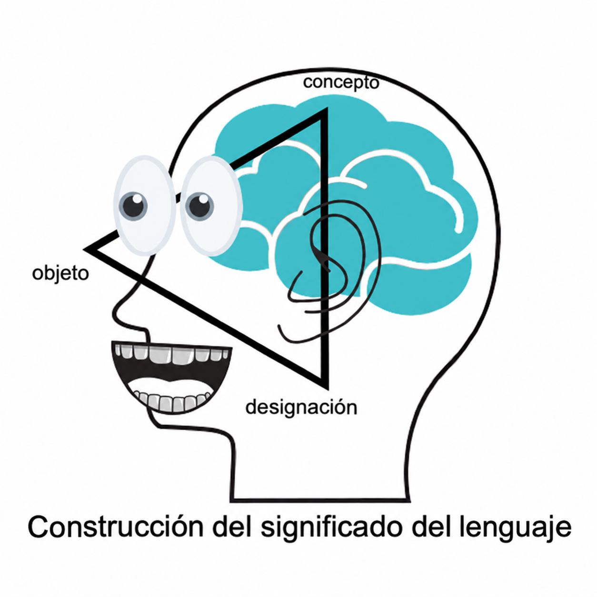

Terminología e inteligencia artificial generativa
Por Alaina Brandt
Traducido por Nina Aguilera
En el panorama tecnológico actual, en constante evolución, comprender cómo nos comunicamos y construimos significado resulta más relevante que nunca. Esta exploración examina dos campos que se intersectan: la ciencia de la terminología (el estudio de cómo los seres humanos comprenden y denominan los conceptos) y la inteligencia artificial generativa (IAG). El análisis conjunto de estas áreas permite comprender mejor los desafíos y las oportunidades que surgen en la comunicación entre humanos y máquinas.
Fundamentos de la teoría terminológica
La terminología ayuda a garantizar la calidad de actividades como la redacción, la traducción y la interpretación. Para quienes trabajan con la comunicación entre personas, es importante entender qué es la terminología y cómo funciona. Una forma de comprender su importancia es mediante el Triángulo Semántico, un modelo que explica cómo las personas entienden y construyen significado. También conocido como Triángulo del Significado, este modelo presenta ideas bastante sencillas.
- En uno de los vértices del triángulo encontramos los objectos - todo aquello que se percibe o se concibe, de acuerdo con ISO 704.
- Otro vértice está reservado a los conceptos, entendidos como las abstracciones mentales que las personas forman.
- En el tercer vértice se encuentran las designaciones, es decir, las palabras que utilizamos en cada lengua para nombrar las abstracciones de los objetos.
La manera en que estos elementos se relacionan es lo que nos permite dar significado al mundo que nos rodea. Aun así, como menciono en el artículo Getting Started with Terminology Management: “Es importante recordar que, aunque las comunidades de hablantes utilicen un lenguaje común, eso no significa que todas las personas tengan exactamente la misma idea sobre cada objeto que se designa. Cada persona tiene sus propias ideas sobre qué hace que un objeto físico sea una cosa y sobre conceptos abstractos como la amistad y el aseguramiento de la calidad."

Desafíos en la IA generativa y la terminología
El surgimiento de la IA generativa de texto ha dado lugar a interesantes debates en el campo de la terminología sobre lo que implica para el Triángulo Semántico. En el uso tradicional del lenguaje, las palabras se relacionan tanto con conceptos como con objetos del mundo real. En cambio, la IA generativa de texto trabaja únicamente con designaciones (Dra. Sue Ellen Wright, comunicación personal, 2024). La tecnología procesa el lenguaje mediante patrones numéricos y grupos de palabras similares, pero no comprende realmente los conceptos ni se conecta con referentes del mundo real. Esta falta de conexión con los componentes conceptuales y referenciales del triángulo ayuda a entender por qué la IA generativa puede experimentar alucinaciones y resultados incorrectos.
Grafos de conocimiento: la solución a la terminología en la IA generativa
Los grafos de conocimiento ofrecen una posible solución a los problemas de precisión de la IA. Un grafo de conocimiento es una manera estructurada de representar el lenguaje especializado: los conceptos y objetos del mundo real se convierten en entidades (nodos) que se conectan mediante relaciones (aristas). El lenguaje especializado es una lengua natural que se utiliza en un campo específico y que se caracteriza por emplear medios de expresión propios de ese campo (ISO 1087). Al organizar estratégicamente los datos terminológicos recopilados sobre este tipo de lenguaje dentro de un grafo, es posible integrarlos en sistemas de IA generativa y mejorar la calidad de sus resultados más allá de lo que puede conseguirse con una consulta estándar a un modelo de lenguaje de gran escala.
Terminología e IAG de texto: conclusiones
Entre las principales ventajas del uso de grafos de conocimiento terminológico con inteligencia artificial generativa se encuentran:
- Mayor precisión mediante relaciones estructuradas entre conceptos.
- Mejor manejo de términos ambiguos mediante un contexto explícito.
- Mayor capacidad para verificar la información frente a conocimiento establecido.
- Una correspondencia terminológica entre idiomas más confiable.
Pon a prueba lo que aprendiste
Ahora que conoces un poco más sobre terminología, comprueba cuánto aprendiste sobre los conceptos principales con este cuestionario